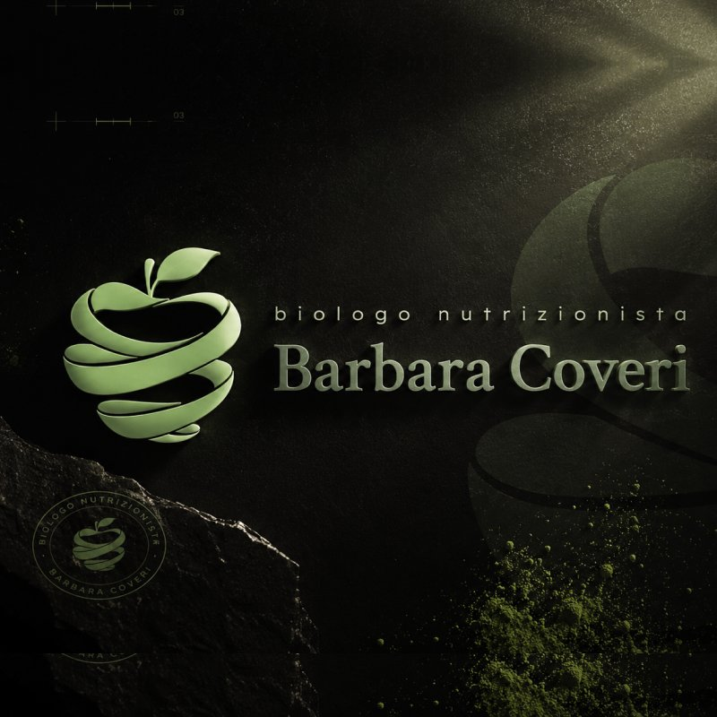

Barbara Coveri
Logo design and brand identity — Nutritionist biologist

A studio opening, an identity that accompanies.
Barbara is a nutritionist biologist from Cesena who was opening her studio. She didn't have a visual identity yet — she had an approach. Her way of working, built on listening, relationship and accompaniment over time, was already clear and defined.
The task was to translate it into a sign that would work everywhere: on the sign, the website, social media.
"Nutrition as self-care. Not imposed schemes — a balanced and sustainable journey over time."


The sign is an apple — iconic symbol of nutrition — but reinterpreted through movement. The shape is born from the ribbon of a rhythmic gymnast: a continuous curve that wraps without squeezing. Not a symbol of control or rigour, but of balance in motion. A sign that could only do this work, for this client.
The palette works on green tones, with beige, mustard and lilac accents — natural without being banally organic. Typography pairs Crimson Text, a classic serif that brings cultural and medical depth, with Lexend Exa, a neutral and technical sans-serif that ensures readability and contemporaneity. Two voices that complement without overlapping.
